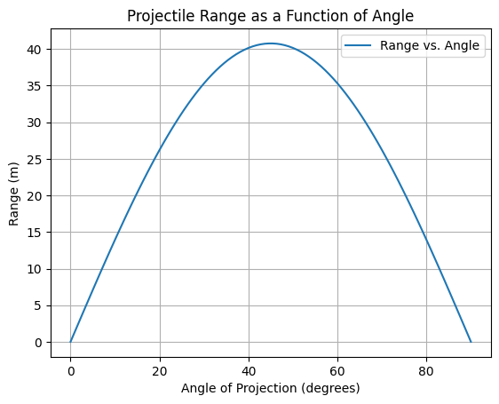
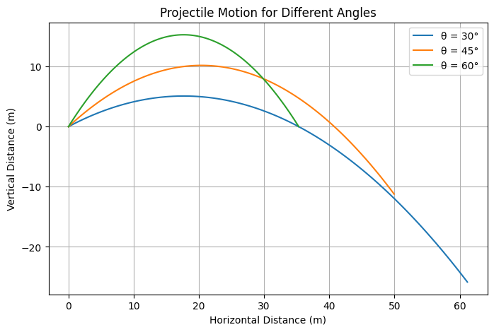
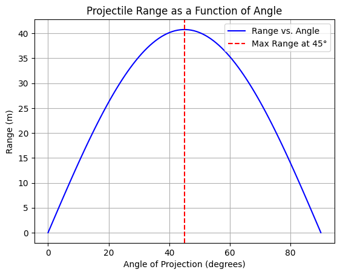
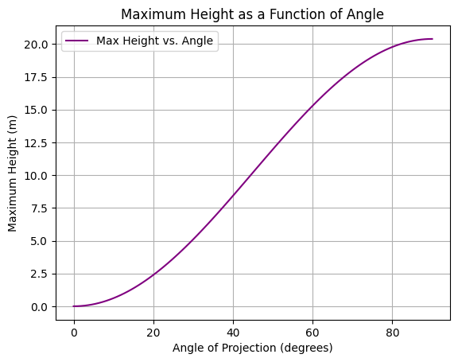

Problem 1: Investigating the Range as a Function of the Angle of Projection
Theoretical Foundation
Equations of Motion: A Fundamental Approach
Projectile motion is analyzed by breaking it into horizontal (x-axis) and vertical (y-axis) components, using Newton's Second Law:
where \(F\) is the force, \(m\) is the mass of the projectile, and \(a\) is its acceleration.
Horizontal Motion: Constant Velocity
Since no force (neglecting air resistance) acts in the horizontal direction:
Thus, the horizontal velocity remains constant:
The horizontal position as a function of time is:
Vertical Motion: Accelerated Motion Due to Gravity
In the vertical direction, gravity acts downward:
Applying Newton's Second Law:
The vertical velocity and displacement equations are obtained by integrating acceleration:
- Velocity in the y-direction:
$$ v_y = v_0 \sin(\theta) - g t $$
- Vertical position as a function of time:
$$ y(t) = v_0 \sin(\theta) t - \frac{1}{2} g t^2 $$
Time of Flight
The projectile hits the ground when \(y = 0\), solving for \(t\):
Factoring \(t\):
This gives two solutions:
- \(t = 0\) (initial launch)
- \(t = \frac{2 v_0 \sin(\theta)}{g}\) (Total time of flight)
Horizontal Range (R)
The range is found by substituting \(T\) into \(x(t)\):
Using the trigonometric identity \(2 \sin(\theta) \cos(\theta) = \sin(2\theta)\) :
Key Insights:
- Maximum range occurs at \(\theta = 45^\circ\).
- Symmetry property: A projectile at \(\theta\) has the same range as at \(90^\circ - \theta\).
- Direct proportionality to \(v_0^2\): Doubling \(v_0\) quadruples the range.
Analysis of the Range
Effect of Angle of Projection
From the range equation:
Observations:
- \(R\) is maximized when \(\sin(2\theta)\) is maximized at \(90^\circ\) → \(\theta = 45^\circ\).
- Same range at \(\theta\) and \(90^\circ - \theta\) (e.g., \(30^\circ\) and \(60^\circ\)).
Effect of Initial Velocity \(v_0\)
- Since \(R \propto v_0^2\), doubling \(v_0\) quadruples the range.
- This explains why high-speed projectiles travel much farther.
Effect of Gravity \(g\)
- If the experiment is conducted on a planet with stronger gravity, the range decreases:
$$ R \propto \frac{1}{g} $$
- Example: On the Moon (\(g_{\text{moon}} = 1.63\) m/s²), the range is six times larger than on Earth.
Practical Applications
Sports Applications
- Soccer, Basketball, Baseball:
Players use angles near 45° for maximum range. - Example: A soccer player aiming for a long pass will use an angle close to 45°.
- In basketball, high-arc shots (greater than 45°) increase the chance of the ball going through the hoop.
Engineering & Ballistics
- Military Artillery:
Artillery shells are launched at angles close to 45° for maximum distance. - Rocket Science:
Spacecraft trajectories involve adjustments for gravity, drag, and other forces.
Effects of Uneven Terrain
In real-world applications, the landing height is often not the same as the launch height. In such cases, we use the quadratic formula for solving the range:
Setting \(y_f \neq 0\), we get:
Example:
- Golf shots on a hill
- Projectile motion on Mars (lower \(g\))
- Missile targeting in military operations
Air Resistance & Wind Effects
- Air Resistance:
-
Real projectiles experience drag force:
\[ F_d = \frac{1}{2} C_d \rho A v^2 \] -
This reduces the range, requiring numerical simulations.
-
Wind Effects:
- Tailwind increases range.
- Headwind decreases range.
Computational Modeling
To study realistic cases, we use:
- Python Simulations (Numerical Integration)
- Machine Learning for projectile optimization
- Monte Carlo Methods for trajectory prediction
For example, we can modify our Python script to include air resistance using the Euler method.
Implementation: Python Simulation
Python plot for Visualizing Range vs. Angle




Limitations & Realistic Considerations
While the above equations assume ideal projectile motion, real-world conditions introduce complexities:
Air Resistance:
- In the real world, air drag reduces range.
- A more accurate model includes the drag force equation:
$$ F_d = \frac{1}{2} C_d \rho A v^2 $$
where:
- \(F_d\) = Drag force
- \(C_d\) = Drag coefficient
- \(\rho\) = Air density
- \(A\) = Cross-sectional area of the projectile
-
\(v\) = Velocity of the projectile
-
Computational methods like the Runge-Kutta method can simulate trajectories with air resistance.
Wind Effects:
- Wind alters both horizontal and vertical motion.
- A tailwind increases range, while a headwind reduces it.
Uneven Terrain:
- If the projectile lands at a different height than it was launched, the standard range equation does not apply.
- Numerical integration methods can solve such cases.
Extending the Model:
- Computational tools such as Python, MATLAB, or simulations in physics engines can provide more realistic trajectories.
- Numerical methods (Euler’s method, Runge-Kutta) allow solving cases where air resistance is considered.